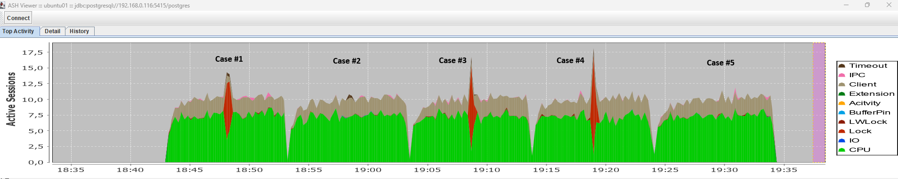

Partitions Maintenance
In this article, we explore different approaches to attaching and detaching partitions for partitioned tables in PostgreSQL.
Test environment
Host:
- Device: ThinkPad T480 Laptop
- CPU: Intel(R) Core(TM) i7-8650U CPU @ 1.90GHz (2.11 GHz), 4 Cores (8 Logical Threads)
- RAM: 16GB
- Disk: SSD LITEONIT LCS-256M6S 2.5 7mm 256GB
- OS: Windows 11
- Virtualization: Oracle VirtualBox 7.2.4 r170995
Virtual Machine:
- vCPU: 4
- RAM: 4 GB
- OS: Ubuntu 24.04.2 LTS
PostgreSQL Versions (compiled from sources):
- 10.23
- 11.22
- 12.22
- 13.22
- 14.19
- 15.14
- 16.10
- 17.6
- 18.0
Tools
- pg_src_setup.sh - downloads and compiles the required Postgres versions.
- test_case_attach_detach.sql - sql script containing the commands for each test case.
- run_test.sh - script that runs the test for each version of Postgres.
- Set of scripts to test each test case under load:
- case*.sql - set of scripts containing SQL commands to reproduce each test case. Execution takes place within a transaction; after executing the target command, a 15-second pause is introduced to clearly demonstrate the potential issues that each approach may cause under high load.
- load_read.sql - script that simulates a read load.
- load_write.sql - script that simulates a write load.
- reinit.sql - script that recreates database objects before each new test case.
- run_load.sh - script that runs each of the test cases under load.
- ASH Viewer - tool for monitoring database wait events during load testing.
Functional testing
Four tests were run on each version of Postgres:
- Case #1: take partition attach operation using:
- Case #2: take partition attach operations using:
- Case #3: take partition detach operation using:
- Case #4: take partition detach operation using:
- Case #5: take partition detach operation using:
CREATE TABLE yyy PARTITION OF yyy;
CREATE TABLE yyy LIKE zzz;ALTER TABLE xxx ATTACH PARTITION yyy;
DROP TABLE yyy;
ALTER TABLE xxx DETACH PARTITION yyy;DROP TABLE yyy;
ALTER TABLE xxx DETACH PARTITION yyy CONCURRENTLY;DROP TABLE yyy;
The primary goal of the tests was to understand which locks would be acquired and on which objects. The main focus was on the parent table and how attach/detach procedures could impact its operation.
Test results are in table below:
| PG Version | Case #1 | Case #2 | Case #3 | Case #4 | Case #5 |
|---|---|---|---|---|---|
| 10.23 | AccessExclusiveLock on parent table | AccessExclusiveLock on parent table | AccessExclusiveLock on parent table | AccessExclusiveLock on parent table | Not available |
| 11.22 | AccessExclusiveLock on parent table | AccessExclusiveLock on parent table | AccessExclusiveLock on parent table | AccessExclusiveLock on parent table | Not available |
| 12.22 | AccessExclusiveLock on parent table | ShareUpdateExclusiveLock on parent table | AccessExclusiveLock on parent table | AccessExclusiveLock on parent table | Not available |
| 13.22 | AccessExclusiveLock on parent table | ShareUpdateExclusiveLock on parent table | AccessExclusiveLock on parent table | AccessExclusiveLock on parent table | Not available |
| 14.19 | AccessExclusiveLock on parent table | ShareUpdateExclusiveLock on parent table | AccessExclusiveLock on parent table | AccessExclusiveLock on parent table | Available |
| 15.14 | AccessExclusiveLock on parent table | ShareUpdateExclusiveLock on parent table | AccessExclusiveLock on parent table | AccessExclusiveLock on parent table | Available |
| 16.10 | AccessExclusiveLock on parent table | ShareUpdateExclusiveLock on parent table | AccessExclusiveLock on parent table | AccessExclusiveLock on parent table | Available |
| 17.6 | AccessExclusiveLock on parent table | ShareUpdateExclusiveLock on parent table | AccessExclusiveLock on parent table | AccessExclusiveLock on parent table | Available |
| 18.0 | AccessExclusiveLock on parent table | ShareUpdateExclusiveLock on parent table | AccessExclusiveLock on parent table | AccessExclusiveLock on parent table | Available |
Load testing
Testing was performed on Postgres version 15.14. The results are shown in the screenshot below:

Results
- For versions 10 and 11, there is no safe way to use the table partition Attach/Detach procedures, as the exclusive lock on the parent table will block all operations on it.
- For versions 12 and 13, there is a safe way to attach a partition using the combination of commands
CREATE TABLE yyy LIKE zzz; ALTER TABLE xxx ATTACH PARTITION yyy;. However, there is still no safe method for performing a Detach operation under high load. - For versions 14 and above, there is a safe method for attaching a partition using the command sequence
CREATE TABLE yyy LIKE zzz; ALTER TABLE xxx ATTACH PARTITION yyy;. For theDETACHoperation, theCONCURRENTLYoption can be used; however, under high load, there is a possibility that this command may fail to acquire the required short-term lock.
Limitations
- While versions 14 and above support non-blocking partition detachment using the
CONCURRENTLYoption, this feature cannot be used within PL/pgSQL procedures or functions:
ERROR: ALTER TABLE ... DETACH CONCURRENTLY cannot run inside a transaction block - "At most one partition in a partitioned table can be pending detach at a time." This means that if you need to detach multiple partitions, it must be done sequentially.
- The
CONCURRENTLYoption in theDETACH PARTITIONcommand cannot be used if aDEFAULTpartition is defined for the parent table:
ERROR: cannot detach partitions concurrently when a default partition exists - If a table has a
DEFAULTpartition, adding a new partition can take a significant amount of time, as PostgreSQL must verify that the data in theDEFAULTpartition does not belong (does not satisfy the condition) to the partition you are adding. - Global statistics are not automatically gathered by the autovacuum process if changes occur only on child tables within the partitioning hierarchy. Therefore, it is periodically necessary to collect statistics manually using
ANALYZE parent_table;. - After creating a new partition, its statistics may not be up-to-date initially. Therefore, you either need to configure more aggressive autovacuum settings, manually collect statistics on the parent table to stabilize query plans, or use query hints (via pg_hint_plan) to ensure plans are not affected by newly created partitions.
Workarounds
- To perform regular concurrent
DETACHoperations on outdated partitions, you will need to write a script that identifies the partition (by name) matching your removal criteria and executes aDETACH CONCURRENTLYcommand separately. The easiest approach is to combine Bash and SQL with a Cron schedule. If you need to keep all the logic within the database, you can consider using pg_cron. In this case, the database should contain a procedure that runs regularly via pg_cron, which in turn creates another job consisting of a singleDETACH CONCURRENTLYcommand. - For versions 10 and 11,
ATTACH/DETACHoperations must be performed during periods of low activity, and you should use thestatement_timeout / lock_timeoutparameters to prevent huge lock queues. Additionally, you have to implement retry logic in case the required locks cannot be acquired. - For versions 12 and 13,
DETACHoperations should be performed during periods of low activity. You should also use thestatement_timeout / lock_timeoutparameters to prevent huge lock queues. Additionally, you have to implement retry logic in case the required locks cannot be acquired. - If, for some reason, a
DETACHoperation fails (e.g., due to a server crash) and a partition remains in the "detaching" state, you must use theFINALIZEoption. It is advisable to include this check in your scripts before issuing the DETACH command. For example, if the partition's status in the pg_inherits.indetachpending column isTRUE, you should add theFINALIZEoption.
Docs
- About timeout options available in Postgres (lock_timeout, statement_timeout, idle_in_transaction_timeout, idle_session_timeout, transaction_timeout): Postgres Timeout Explained
- A deeper explanation of the need to use lock_timeout: Zero-downtime Postgres schema migrations need this: lock_timeout and retries
- Another example on how to perform object modifications in your database with minimal downtime caused by long running locks: How to run short ALTER TABLE without long locking concurrent queries
- PostgreSQL Partitioning Enhancements Over Versions
- GitLab experience in partitioning:
- Database Partitioning Epic #2023
- Reduce locks when detaching database partitions
- Reduce database lock acquired by the partition manager
- Some notes about auto-partititioning:
- About partitioning of existing tables with minimal downtime: Postgres Partition Conversion: minimal downtime
- About LockManager issue you can face after partitioning: Postgres Partition Pains - LockManager Waits
TODO
Additional checks are required:
- with foreign keys
- with
DEFAULTpartitioned defined